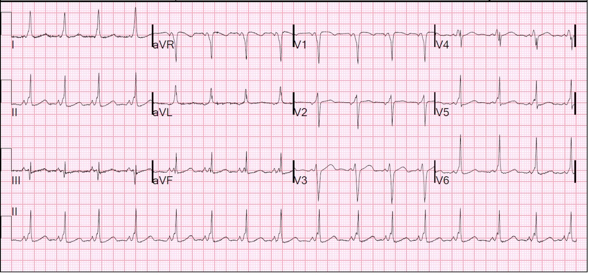
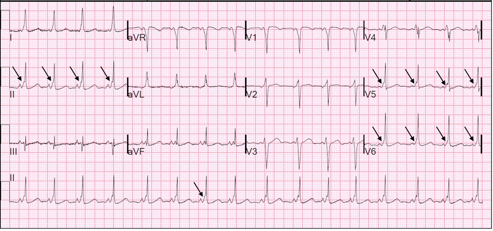
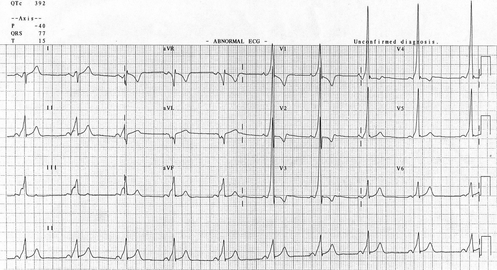
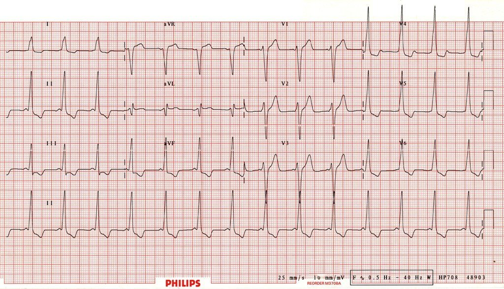
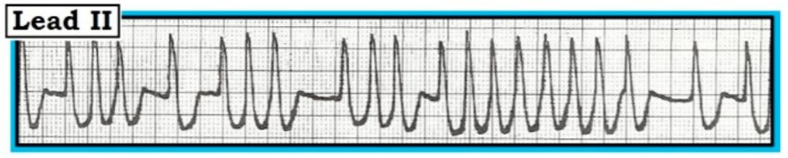
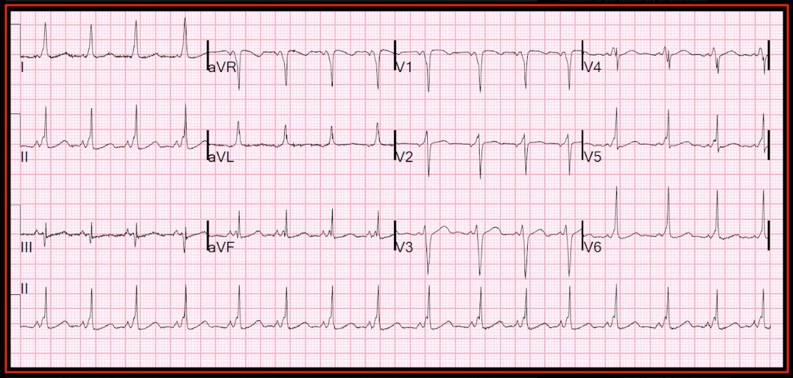

07/08/2018 — Bé gái 12 tuổi bị hen phế quản có các cơn khó thở từng lúc không đáp ứng với albuterol — Đó là gì, và tại sao lại là lúc này?
Bản dịch tiếng Việt của bài "12 Year Old Asthmatic with Intermittent Dyspnea Unresponsive to Albuterol—What is it, and Why Now?" – Dr. Smith’s ECG Blog. Giữ nguyên toàn bộ 8 hình ảnh của bản gốc.
Ca này được viết bởi một trong những bác sĩ nội trú năm 2 xuất sắc của Hennepin, Aaron Robinson, với nhiều bình luận và chỉnh sửa của Smith.
Cảm ơn Dr. Smith và Dr. Travis Olives đã tham gia vào ca bệnh này.
Một bé gái
12 tuổi có tiền sử hen phế quản nhẹ từng lúc đến
khoa cấp cứu vì khó thở tăng dần trong
vài ngày qua. Bé đã tiêm chủng đầy đủ và không có
tiền sử bệnh lý (PMHx) nào khác ngoài hen, tiền sử gia đình không có gì đáng chú ý. Bé không
xác định được yếu tố khởi phát cụ thể nào cho cơn hen. Sàng lọc ban đầu tại khu phân loại (triage)
cho thấy dấu hiệu sinh tồn bình thường và nhiệt độ bình thường. Khi hỏi
bệnh nhân và mẹ bé, họ cho biết bệnh nhân bị
khó thở tăng dần
trong tuần qua, nhưng các đợt khí dung
(vốn thường giải quyết được các vấn đề của bé) không còn hiệu quả. Đứa trẻ
trông lo lắng, nhưng nhìn chung không có vẻ nhiễm độc trong lần đánh giá ban đầu tại khoa cấp cứu. Mẹ bé đã cho bé khí dung albuterol hai lần trước khi
đến viện, nhưng không cải thiện.
Điều khiến các bác sĩ cấp cứu băn khoăn là
bệnh sử và khám thực thể. Thoạt nhìn,
mọi thứ có vẻ phù hợp với hen nặng lên, nhưng có điều gì đó
không khớp. Đứa trẻ không có tiếng khò khè khi khám, nhưng điều này không quá bất thường vì hen thường không có khò khè. Điều bất thường hơn đối với hen là bé cũng không có tiền sử ho (triệu chứng gần như luôn có mặt trong hen).
Chính việc khai thác sâu hơn bệnh sử mới
khơi gợi sự chú ý của các bác sĩ cấp cứu: khó thở khởi phát đột ngột
mà không có yếu tố khởi phát rõ ràng, cũng như việc không hề cải thiện dù chỉ một chút với albuterol. Khi được hỏi thêm, bệnh nhân nói “Con
cảm thấy như mình cứ phải hít một hơi thật sâu và con rất lo lắng,
rồi nó qua đi.” Các cơn này ngày càng thường xuyên hơn trong
vài tuần qua. Bệnh sử bất thường này khiến bác sĩ cấp cứu
mở rộng chẩn đoán phân biệt và xem xét các bệnh lý khác.
Vì vậy, một điện tâm đồ đã được
chỉ định và được trình bày dưới đây.


Có khoảng PR ngắn, 101 ms, ngay cả đối với một trẻ 12 tuổi. PR bình thường ở trẻ 12 tuổi dao động từ 106 ms đến 176 ms. Ở đây là 101 ms.
Hơn nữa, máy tính đo được thời gian QRS 117 ms, dài ngay cả với người lớn, và quá dài đối với trẻ 12 tuổi (bình thường = 87 ms).
Trong ca này, máy tính đã đọc ra “tiền kích thích thất/WPW [sóng delta]”
Nhưng không phải lúc nào máy cũng làm được như vậy.
Đây là một ví dụ kinh điển như trong sách giáo khoa của hội chứng Wolff-Parkinson-White (típ B, xem bên dưới).


Với dấu hiệu này, các bác sĩ khoa cấp cứu lập tức lo ngại
rằng bệnh nhân này không phải đang bị hen nặng lên mà thực ra đang có
các cơn SVT có triệu chứng. Bệnh nhân được gắn
monitor theo dõi tim. X-quang ngực trong giới hạn bình thường, và siêu âm tim tại giường
không phát hiện bất thường rõ rệt nào. Troponin ban đầu
âm tính, và xét nghiệm sinh hóa đáng chú ý có hạ kali máu
(K=2,8), làm tăng nguy cơ rối loạn nhịp ở bệnh nhân (bằng cách nào? xem bên dưới).
Magnesi bình thường. Bệnh nhân được bổ sung kali clorid đường uống.
Bệnh viện
đang điều trị cho bé không có dịch vụ chăm sóc tim mạch nhi khoa chuyên sâu
và có sự lo ngại vì bệnh nhân ngày càng có nhiều triệu chứng.
Quyết định được đưa ra là chuyển bé đến bệnh viện đại học gần đó
có chuyên khoa tim mạch nhi chuyên sâu để điều trị triệt để. Bé được
chuyển viện trong tình trạng ổn định. Bé không hề có cơn SVT nào trong suốt
thời gian ở khoa cấp cứu.
Diễn tiến:
Diễn tiến sau khi bệnh nhân được chuyển đến một bệnh viện nhi có các bác sĩ chuyên khoa tim mạch:
Bệnh nhân
được chụp lại X-quang ngực và siêu âm tim chính thức ngay trong ngày
chuyển viện, cả hai đều âm tính. Không có dấu hiệu bất thường Ebstein trên
siêu âm tim. Tại sao họ lại tìm bất thường này? Xem giải thích bên dưới. Bé
được xuất viện với Holter theo dõi 24 giờ. Bé có nhiều cơn
SVT cũng như nhiều chuỗi ba và chuỗi bốn PAC
tương ứng với các triệu chứng. Họ đưa bé vào phòng thăm dò điện sinh lý (EP), nơi họ
thực hiện một thủ thuật triệt đốt nhỏ. Sau triệt đốt, không còn thấy cơn SVT nào
nữa và bé không còn đáp ứng tiêu chuẩn WPW trên điện tâm đồ.
Không thể gây ra thêm cơn AVRT nào trong phòng EP. Tình trạng hạ kali máu, như
đã mô tả ở trên, nhiều khả năng là thứ phát do dùng albuterol như chúng tôi
đã nghi ngờ. Bé hiện rất khỏe.
Tại sao họ lại tìm bất thường Ebstein?
Bất thường Ebstein (Ebstein’s Anomaly): Về cơ bản,
đây là một dị tật tim bẩm sinh nặng gây ra tình trạng “nhĩ hóa”
thất phải. Van nhĩ thất bị di lệch xuống dưới
và kích thước thất phải rất nhỏ. Các lá van bất thường, và được
mô tả là “dính bết” vào thất phải. Khoảng một nửa số bệnh nhân còn có
thông liên nhĩ (ASD) hoặc còn lỗ bầu dục (PFO).
Tại sao điều này quan trọng ở bệnh nhân của chúng ta? Khoảng một nửa số bệnh nhân có bất thường Ebstein cũng có bằng chứng WPW trên điện tâm đồ. Các bác sĩ tim mạch đã tầm soát điều này trong ca này. Hãy nhớ lại giải phẫu tim: một vòng xơ dày được gọi là anuli fibrosi cordis cách
điện tâm nhĩ với tâm thất. Ở ĐA SỐ bệnh nhân, nút AV
là yếu tố giới hạn nhờ thời kỳ trơ của nó, và đó là lý do tại sao rung
nhĩ thường không thể thoái biến thành rung thất. Tất nhiên, điều này chỉ đúng khi không có đường phụ nào tồn tại, không giống như bệnh nhân của chúng ta. Do van nhĩ thất bên phải bị di lệch nặng, anuli fibrosi cordis có nguy cơ bị gián đoạn, và đó là lý do tại sao ~50% bệnh nhân có bất thường Ebstein bị WPW.
Điểm cần học
Trong ca này, điện tâm đồ hoàn toàn không khó. Máy tính thậm chí còn chẩn đoán chính xác.
Điểm cần học là ngay cả các triệu chứng ở trẻ em đôi khi cũng có thể được lý giải bằng điện tâm đồ. Tôi (Smith) luôn ghi điện tâm đồ cho trẻ bị đau ngực không có lời giải thích rõ ràng, vì trẻ có thể bị viêm cơ tim và thậm chí nhồi máu cơ tim (do bóc tách động mạch vành, bệnh Kawasaki trước đây (có thể không được biết đến), bất thường động mạch vành). Và tôi thậm chí còn cho làm chỉ một lần xét nghiệm troponin trong những trường hợp này.
Bất kỳ trẻ nào (cũng giống như người lớn) có các cơn hồi hộp đánh trống ngực, choáng váng, ngất hoặc tiền ngất đều có thể bị WPW, HOCM, QT dài, Brugada hoặc loạn sản thất phải gây loạn nhịp (Arrhythmogenic RV dysplasia). Bất kỳ trẻ nào bị khó thở không rõ nguyên nhân đều có thể bị nhồi máu cơ tim, viêm cơ tim, bệnh tim bẩm sinh, phì đại thất phải do tăng áp phổi, và nhiều bệnh khác nữa. Điện tâm đồ đơn giản, rẻ tiền và không xâm lấn. Tuy vậy, trong một nghiên cứu lớn về ngất ở trẻ em tại khoa cấp cứu, 58% không được ghi điện tâm đồ!
Ngay tuần này, tạp chí New England Journal of Medicine [379(6):524-534; ngày 9 tháng Tám năm 2018] đã đăng một bài báo cho thấy 42 trong số 11.168 thanh thiếu niên không triệu chứng được tầm soát để tham gia hoạt động thể thao có nhiều rối loạn khác nhau liên quan đến đột tử (36 trường hợp được phát hiện nhờ điện tâm đồ, chiếm 0,32%, tức 1 trên 300), bao gồm 5 HOCM, 2 loạn sản thất phải gây loạn nhịp, 1 bệnh cơ tim giãn, 3 QT dài, 2 bất thường động mạch vành, 3 van động mạch chủ hai lá van nguy hiểm, và 26 WPW (1 trên 400).
Nếu trẻ không triệu chứng có nhiều bất thường đáng kể như vậy, thì trẻ có triệu chứng không rõ nguyên nhân hẳn sẽ có nhiều hơn nữa, dù con số này chưa được biết (theo những gì tôi tìm hiểu được).
Mối nguy duy nhất của việc ghi điện tâm đồ là đọc sai. Đặc biệt là không nhận ra các biến thể bình thường là bình thường.
Đây là nhiều ca trẻ em có các dấu hiệu điện tâm đồ quan trọng.
Hội chứng Wolff-Parkinson-White
Hội chứng
Wolff-Parkinson-White là một hội chứng tiền kích thích
biểu hiện bằng các rối loạn nhịp do một đường phụ nối giữa tâm nhĩ
và tâm thất (tức bó Kent, hay đường
tắt nhĩ thất). Nói khái quát hơn, nó được xếp vào loại nhịp nhanh vào lại nhĩ thất, hay AVRT. Theo kinh điển, hội chứng được xác định bởi sự xuất hiện của “sóng delta” trên điện tâm đồ, tức phần đi lên bị trát đậm của QRS, và sự hiện diện của khoảng PR ngắn. Do đường phụ đi qua mô bất thường, sự dẫn truyền không nhanh
như qua nút AV/mạng Purkinje. Khi nút SA phát xung, sự dẫn truyền
chậm qua đường phụ lúc đầu chịu trách nhiệm tạo ra
sóng delta. Nhìn chung, đường dẫn truyền qua nút AV chiếm ưu thế, và
bệnh nhân không gặp vấn đề gì. Tuy nhiên, khi một vòng vào lại được hình thành
giữa nút AV và đường phụ, bệnh nhân có thể rơi vào SVT và
có thể ổn định hoặc có triệu chứng/không ổn định. Dẫn truyền xảy ra theo kiểu xuôi chiều
(đa số trường hợp) hoặc ngược chiều (~5% ca WPW).
Xuôi chiều (Orthodromic)
Dẫn truyền xuôi chiều (orthodromic) (tiếng Latin nghĩa là “đúng”) là dẫn truyền xuôi dòng qua nút AV (theo đường bình thường) và ngược dòng lên đường phụ. Điều này làm QRS hẹp vì quá trình khử cực ban đầu diễn ra như bình thường.
Ngược chiều (Antidromic)
Ít gặp hơn nhiều, vào lại ngược chiều hoàn toàn ngược lại: dẫn truyền xuôi dòng qua đường phụ và ngược dòng lên nút AV. Kiểu dẫn truyền bất thường này làm QRS rộng và có thể khó phân biệt với nhịp nhanh thất. May mắn là kiểu này ít gặp hơn.
Tùy theo vị trí của đường phụ, các biểu hiện của WPW trên điện tâm đồ nhịp xoang sẽ khác nhau.
Wolff-Parkinson-White típ A. Một ví dụ ở dưới đây:


Làm sao biết được?Sóng R dương lớn ở V1 tương tự như blốc nhánh phải.
Quá trình khử cực ban đầu xảy ra ở bên trái (đường phụ bên trái; cũng giống như trong RBBB, khi nhánh trái là phân nhánh duy nhất còn hoạt động thì quá trình khử cực đi từ trái sang phải)
Wolff-Parkinson-White típ B. Một ví dụ khác từ bộ sưu tập tuyệt vời của LITFL ở dưới đây:


Đó là vì đường phụ bên phải dẫn tới hoạt hóa từ phải sang trái, giống như trong LBBB.
Cũng lưu ý rằng ở cả hai típ đều có những bất thường ST-T có thể giống thiếu máu cục bộ. Đây là những bất thường ST-T “thứ phát”, thứ phát sau một QRS bất thường. Bất cứ khi nào bạn thấy ST-T bất thường, bạn nên xác định xem QRS có phải là nguồn gốc (thứ phát) hay QRS tương đối bình thường (ST-T là “nguyên phát”, do bệnh lý như thiếu máu cục bộ.
Hạ kali máu đã ảnh hưởng thế nào trong ca này?
Bệnh nhân này đã có đường phụ từ lâu. Nó không đột nhiên xuất hiện. Vậy tại sao bé bắt đầu có triệu chứng? Nhiều khả năng là do hạ kali máu. Hạ kali máu có thể khởi phát các nhát bóp nhĩ sớm (PAB). Sự khởi phát một nhịp vào lại, dù là AVNRT hay AVRT (nhịp nhanh vào lại nhĩ thất, trong WPW), đều thông qua một PAB. Bình thường, trong nhịp xoang, xung được dẫn truyền xuống CẢ nút AV lẫn đường phụ. 2 đường này cùng nhau tạo ra một nhát hỗn hợp, sóng delta là kết quả của dẫn truyền xuống đường phụ, còn phần phức bộ hẹp còn lại là kết quả của dẫn truyền xuống các sợi Purkinje. Nếu có một PAB xảy ra khi một trong hai đường đang trong thời kỳ trơ, xung sẽ bị blốc ở đường đó và đi xuống đường kia. Sau đó, xung có thể đi ngược LÊN đường lúc đầu bị blốc vì đường đó không còn trơ nữa. Rồi nó có thể tạo thành một vòng lặp vô tận. PAB không nhất thiết cần hạ kali máu mà có thể xảy ra vì nhiều lý do. Thuốc chẹn beta khá hiệu quả trong việc ức chế PAB và do đó có thể được dùng để ngăn khởi phát SVT.
“WPW ẩn” (Concealed WPW)
Điều thú vị là không phải lúc nào cũng thấy được sóng delta! Nếu đường phụ nằm đủ xa nút SA, quá trình khử cực từ nút SA có thể chưa tới được đường phụ vào lúc nút AV khử cực. Điều
này dẫn đến không có sóng delta! Tuy nhiên, bạn có thể “bộc lộ” đường
phụ bằng cách làm chậm tần số tim ở những bệnh nhân này. Một cách khác khiến WPW
có thể bị ẩn là trường hợp rất hiếm gặp (~15% tổng số bệnh nhân WPW) dẫn truyền chỉ ngược dòng,
trong đó đường phụ CHỈ cho phép dẫn truyền ngược dòng, điều mà
hiển nhiên sẽ không tạo ra sóng delta trên điện tâm đồ nhịp xoang nhưng vẫn khiến
bệnh nhân dễ bị các nhịp nhanh vào lại.
Xem thêm về dẫn truyền ẩn:
Nhịp nhanh QRS rộng (Wide Complex Tachycardia)
Sóng R lớn ở chuyển đạo V1. Và tại sao khoảng PR lại không ngắn?
Một nhịp nhanh QRS hẹp đều rất nhanh, tiếp theo là một nhịp nhanh QRS rộng đều nhanh tương đương (A Very Fast Regular Narrow Complex, Followed by an Equally Fast Regular Wide Complex)
Điều trị trong bối cảnh cấp
chủ yếu tập trung vào SVT và tối ưu hóa điện giải. Có thể thử nghiệm pháp cường phế vị
và/hoặc chuyển nhịp bằng thuốc ở bệnh nhân ổn định
(adenosine, CCB, v.v.) khi có SVT. Bệnh nhân không ổn định cần được sốc điện chuyển nhịp
bằng dòng điện một chiều (DC) ngay lập tức. Nếu bệnh nhân có dẫn truyền ngược chiều,
phải hết sức thận trọng để không nhầm với nhịp nhanh
thất (là VT cho đến khi chứng minh được điều ngược lại). Trong bản cập nhật ACLS
gần đây nhất, AHA nêu rằng có thể “Cân nhắc adenosine CHỈ KHI
bệnh nhân đang có nhịp nhanh QRS rộng, ĐỀU, ĐƠN DẠNG, ổn định.”
Lý do là adenosine sẽ cắt được WPW ngược chiều (hoặc SVT kèm dẫn truyền
lệch hướng), nhưng hiển nhiên KHÔNG điều chỉnh được nhịp nhanh thất. KHÔNG BAO GIỜ được thử adenosine ở bệnh nhân có nhịp QRS RỘNG KHÔNG ĐỀU. Đây có thể là rung nhĩ kèm WPW đáng sợ, một
nhịp mà nếu xảy ra blốc nút AV, các sóng rung từ
tâm nhĩ sẽ chỉ đi xuống qua đường phụ, và
bệnh nhân rất có thể sẽ mất bù và chuyển thành rung thất.
Điều trị triệt để
WPW có thể bằng triệt đốt đường phụ bằng sóng có tần số radio
tại phòng điện sinh lý hoặc bằng điều trị nội khoa. Xem thêm
bên dưới.
Trang Life in the Fast Lane tổng quan rất xuất sắc về WPW và có thể xem tại đây, bao gồm các ví dụ điện tâm đồ WPW típ A và típ B.
https://lifeinthefastlane.com/ecg-library/pre-excitation-syndromes/ (Thư viện điện tâm đồ LITFL: các hội chứng tiền kích thích)

===================================
Bình luận của KEN GRAUER, MD (7/8/2018):
===================================
Chúng tôi xin cảm ơn các Dr. Robinson, Olives và Smith vì ca bệnh gợi nhiều suy nghĩ này. Như Dr. Smith đã nêu — một trong những điểm MẤU CHỐT là một số triệu chứng ở trẻ em có thể được lý giải bằng điện tâm đồ. Các bác sĩ lâm sàng đã bị WPW cuốn hút trong nhiều năm. Nhiều khía cạnh về chẩn đoán và xử trí vẫn còn gây tranh cãi. Vì mục đích học thuật — tôi xin bổ sung các bình luận sau.
- Như đã nêu — chẩn đoán WPW trong ca này không khó. Có khoảng PR ngắn rõ ràng — và các sóng delta nổi bật thấy được ở hầu như mọi chuyển đạo trên bản ghi này. Nhưng chẩn đoán WPW thường tinh tế hơn nhiều. Không phải lúc nào sóng delta cũng thấy ở nhiều chuyển đạo như chúng ta thấy ở đây. Một số bệnh nhân (đặc biệt là người lớn tuổi) có phần đầu phức bộ QRS hơi trát đậm ở một số chuyển đạo mà không hề có AP (đường phụ – Accessory Pathway). Và quan trọng nhất — là nhận thức rằng ở bệnh nhân WPW, sự dẫn truyền có thể đi hoàn toàn xuống qua AP — hoàn toàn xuống qua đường nút AV bình thường — hoặc — theo bất kỳ tỷ lệ tương đối nào nằm giữa 2 khả năng này. Ví dụ, nếu mức độ tiền kích thích tương đối là tối thiểu (chẳng hạn 80-90% xung đi xuống qua đường nút AV bình thường) — thì sóng delta có thể khó nhận ra, và phức bộ QRS có thể không quá rộng (Xem ECG Blog #121).
- Đặc tính dẫn truyền của AP có thể thay đổi vì nhiều lý do. Chúng bao gồm giảm khả năng dẫn truyền theo một hoặc cả hai chiều qua AP khi bệnh nhân lớn tuổi — một số thuốc — các kích thích thần kinh tự chủ, cùng nhiều yếu tố khác. Khuynh hướng dẫn truyền qua AP thay đổi như vậy là lý do chính khiến nguy cơ xảy ra rối loạn nhịp nhanh liên quan đến WPW có khả năng đe dọa tính mạng rõ ràng là thấp hơn ở người lớn trên 35-40 tuổi bị WPW mà trước đó chưa từng có rối loạn nhịp có triệu chứng. Do đó — người lớn lớn tuổi vẫn không có triệu chứng do WPW trong suốt cuộc đời cho tới nay thì không nhất thiết cần được chuyển đến bác sĩ tim mạch. Ngược lại, với những tiến bộ gần đây về công nghệ và năng lực chẩn đoán, điều trị không ngừng được nâng cao của các bác sĩ điện sinh lý giàu kinh nghiệm — trẻ nhũ nhi và trẻ em, và có lẽ cả các vận động viên thi đấu ở tuổi thiếu niên và người trẻ tuổi, đều nên được chuyển đi đánh giá toàn diện vào năm 2018, ngay cả khi bệnh nhân không có triệu chứng. LƯU Ý: Để biết thêm về đánh giá và các cân nhắc xử trí ở bệnh nhân WPW không triệu chứng (bao gồm phân tầng nguy cơ) — BẤM VÀO ĐÂY: ECG Blog #153.
Ý nghĩa lâm sàng của khoảng PR ngắn:
Lý do khoảng PR ngắn trong WPW — là vì nút AV bị bỏ qua (bypass).
- Khi dẫn truyền bình thường trong nhịp xoang — xung điện chậm lại khi đi qua nút AV trên đường xuống tâm thất. Do đó — phần lớn khoảng PR bình thường là thời gian để xung đi qua nút AV. Với WPW, xung điện tới tâm thất sớm hơn — vì sự chậm trễ tương đối xảy ra khi đi qua nút AV đã được né tránh nhờ dẫn truyền qua AP.
- Đây là lý do phức bộ QRS trong WPW thường rộng khi nhịp là AFib hoặc cuồng nhĩ (AFlutter) — vì trong cả hai rối loạn nhịp này, xung không phải đi qua đường dẫn truyền bình thường qua nút AV. Thay vào đó, xung có thể vào tâm thất nhanh hơn nhiều bằng cách đi xuôi dòng qua AP. Việc không phải đi qua nút AV khi AFib và AFlutter cũng cho phép đạt tới tần số thất nhanh hơn nhiều (tùy thuộc vào thời kỳ trơ của AP — chứ không phụ thuộc vào thời kỳ trơ của nút AV).
- Ngược lại, ~95% AVRT là xuôi chiều — vì đường xuống tâm thất đi qua đường dẫn truyền bình thường qua nút AV. Do đó — phức bộ QRS thường hẹp trong AVRT.
Cách nhận biết WPW ở bệnh nhân AFib:
Như đã đề cập ở trên — các Rối loạn nhịp liên quan đến WPW chủ yếu là: i) Một SVT vào lại đều = AVRT (nhịp nhanh vào lại nhĩ thất — AtrioVentricular Reciprocating Tachycardia); ii) AFib; và iii) AFlutter. Dù một số bệnh nhân WPW có thể có triệu chứng rất nặng nề với các cơn AVRT — chính AFib (chứ không phải AVRT) mới là rối loạn nhịp có khả năng đe dọa tính mạng nhất.
- Adenosine có thể gây hại nếu dùng cho bệnh nhân WPW đang AFib — nhưng Adenosine LẠI hữu ích để điều trị bệnh nhân WPW có AVRT. “Tin tốt” là — bạn thường có thể nhận ra một bệnh nhân AFib có WPW. Điều này giúp biết khi nào cần tránh Adenosine (và khi nào cũng cần tránh Verapamil/Diltiazem).
Ví dụ — Bạn sẽ diễn giải rối loạn nhịp trong Hình 1 như thế nào?


TRẢ LỜI: Nhịp không đều hoàn toàn. Không thấy sóng P. Phức bộ QRS rộng. Vì vậy, ngay cả khi không thấy điện tâm đồ 12 chuyển đạo đầy đủ — các dấu hiệu trên gần như chẩn đoán xác định AFib.
- Tần số của AFib này nhanh đến mức nào?
TRẢ LỜI: Ở một số đoạn — tần số của AFib trong Hình 1 nằm trong khoảng 250-300/phút (tức là khoảng R-R ở một số đoạn chỉ dài hơn 1 ô lớn một chút — tương ứng với tần số thất ~300/phút). Cách duy nhất để AFib tạo ra đáp ứng thất nhanh đến thế — là khi các xung đi tắt qua thời kỳ trơ dài hơn của nút AV — nghĩa là phải có một AP!
- Nhận ra các đặc điểm điện tâm đồ trong Hình 1 gần như chẩn đoán xác định AFib + WPW. Các đặc điểm này là: i) AFib cực nhanh (trên 220/phút ở một số đoạn của bản ghi); ii) QRS giãn rộng (do dẫn truyền xuôi dòng qua AP); và iii) khoảng R-R thay đổi rất nhiều trên dải nhịp này.
- Xem thêm về những kiến thức cơ bản của các rối loạn nhịp liên quan đến WPW — BẤM VÀO ĐÂY: Section 12.
- Những điểm giảng dạy xuất sắc mà ca bệnh này mang lại bao gồm khả năng nguyên nhân gây khó thở của bé gái 12 tuổi này không phải là hen. Và, dù chuyển bệnh nhân tới một cơ sở có chuyên môn về tim mạch nhi là can thiệp được lựa chọn — cần nhấn mạnh rằng chúng ta vẫn chưa chứng minh được một rối loạn nhịp kéo dài (AVRT, AFib, AFlutter) là nguyên nhân gây triệu chứng của bệnh nhân này. Các nghiên cứu Holter đã cho thấy không chỉ các nhịp nhanh kéo dài — mà cả các nhịp chậm và các PAC và PVC đơn lẻ cũng có thể là nguyên nhân gây hồi hộp đánh trống ngực. Cần bác sĩ điện sinh lý (EP) đánh giá nguy cơ toàn diện để xác định triệt đốt AP có phải là cách xử trí được khuyến nghị cho bệnh nhân này vào lúc này hay không.
Vượt ra ngoài phần cốt lõi: Đã có nhiều cách phân loại các thể WPW được đề xuất. Một bước tiến xa hơn việc chia thành Type A & B — là dùng hình dạng sóng delta ở nhiều chuyển đạo trên điện tâm đồ để dự đoán vị trí có thể của AP. Sau khi nghiên cứu nhiều thuật toán được đề xuất để dự đoán vị trí AP — tôi đã tổng hợp những thuật toán tôi thấy hữu ích nhất thành một phương pháp dễ dùng và chính xác đến bất ngờ (dù rõ ràng không hoàn hảo). Phương pháp của tôi chỉ tốn rất ít thời gian.
- Tôi không cố học thuộc Thuật toán trong phương pháp của mình. Thay vào đó — tôi chỉ cần mở ECG BLOG #76 mỗi khi muốn thử dự đoán.
Hãy xem lại điện tâm đồ ban đầu trong ca bệnh này (Hình 2):


- Bấm vào liên kết tới ECG Blog #76.
- Bước 1 của Thuật toán phụ thuộc vào vị trí xảy ra vùng chuyển tiếp (tức là nơi phức bộ QRS ở các chuyển đạo trước tim trở nên dương nhiều hơn âm).
- Vùng chuyển tiếp trong Hình 2 xảy ra giữa chuyển đạo V4-đến-V5. Điều này nghĩa là chúng ta bắt đầu với BƯỚC B-5 — cho biết ngay rằng chúng ta đang gặp một AP bên phải.
- Giờ chúng ta cần đo trục mặt phẳng trán của sóng delta — bằng cách xem cực tính sóng delta ở chuyển đạo I và aVF. Lưu ý rằng sóng delta ở cả chuyển đạo I và aVF đều dương — nghĩa là trục mặt phẳng trán của sóng delta là dương. Theo Thuật toán — điều này dự đoán AP sẽ nằm ở thành tự do trước-bên của RV.
- LƯU Ý: Tôi gắn nhãn loạt bình luận cuối này là “Vượt ra ngoài phần cốt lõi” — vì việc xác định chính xác vị trí AP không phải là thông tin then chốt đối với những người không phải là bác sĩ điện sinh lý (EP) điều trị cho bệnh nhân. Nhưng: i) Thật thú vị khi có thể dự đoán vị trí AP một cách nhanh chóng và chính xác đến bất ngờ; và, ii) Tôi nghĩ sẽ hữu ích khi hiểu rằng việc bác sĩ điện sinh lý (EP) biết vị trí có thể của AP trước khi tiến hành thăm dò điện sinh lý (EP) có thể giúp cô lập AP nhanh hơn trong khi thăm dò điện sinh lý.